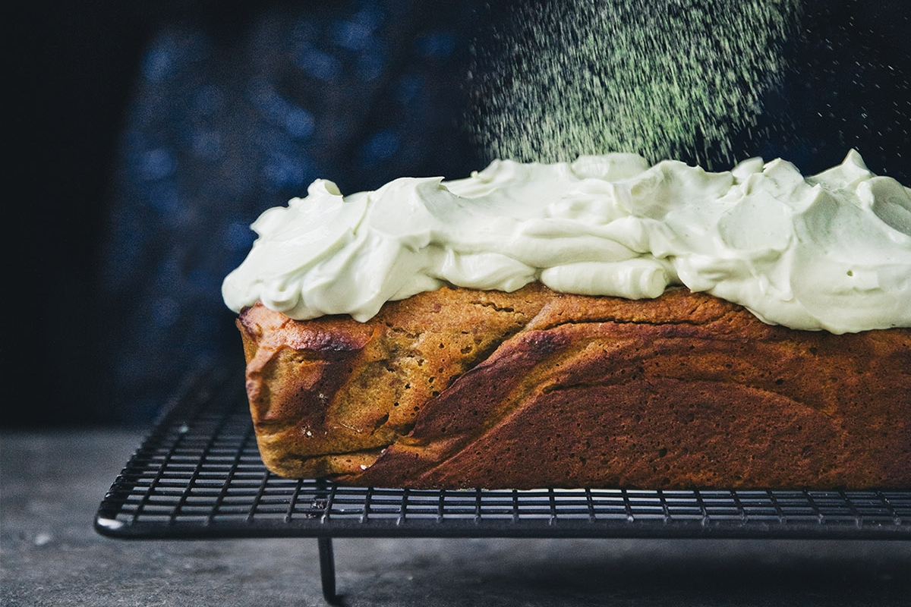
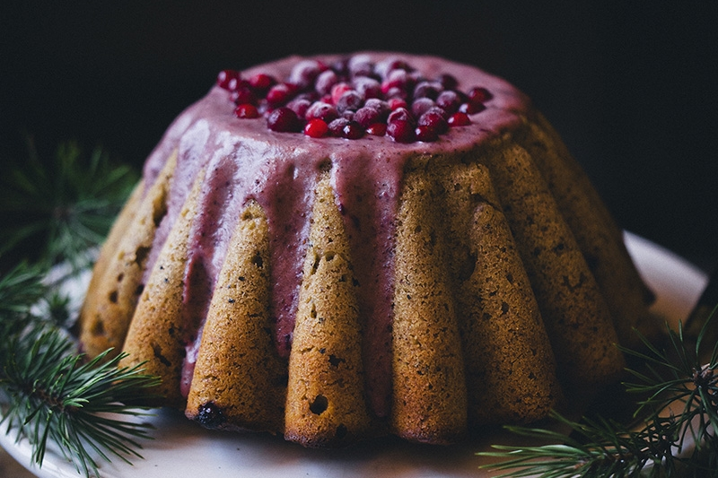
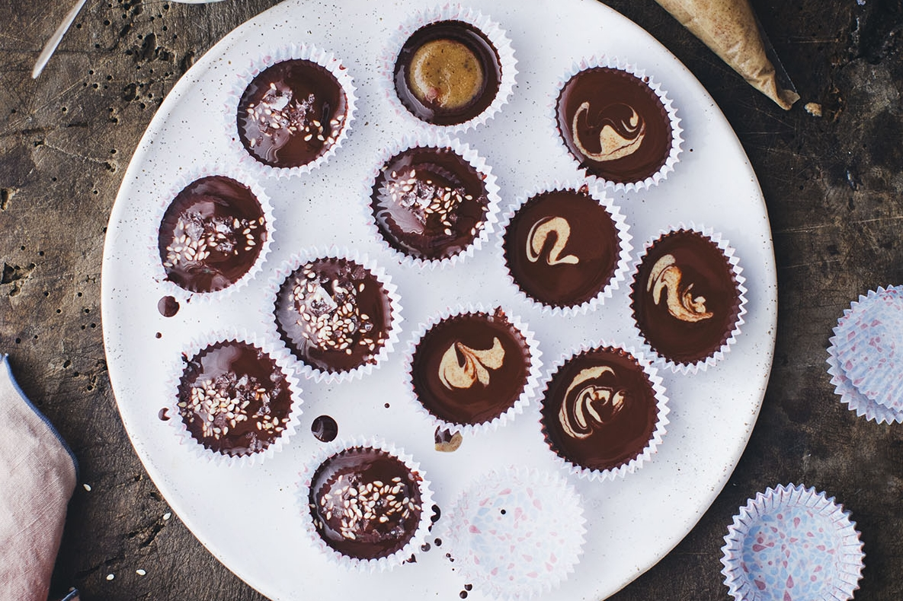
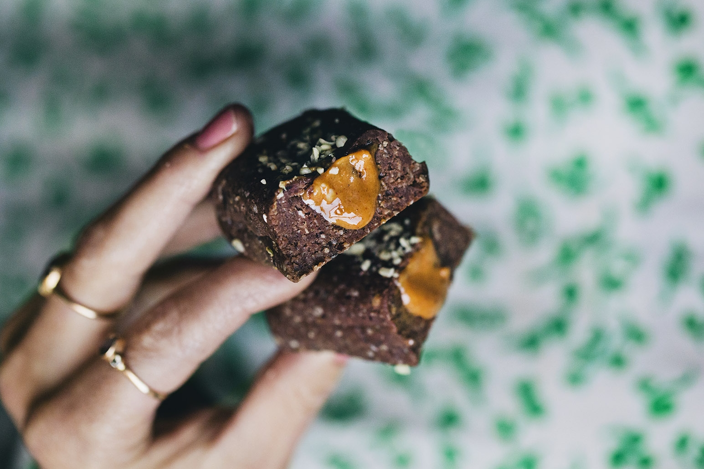
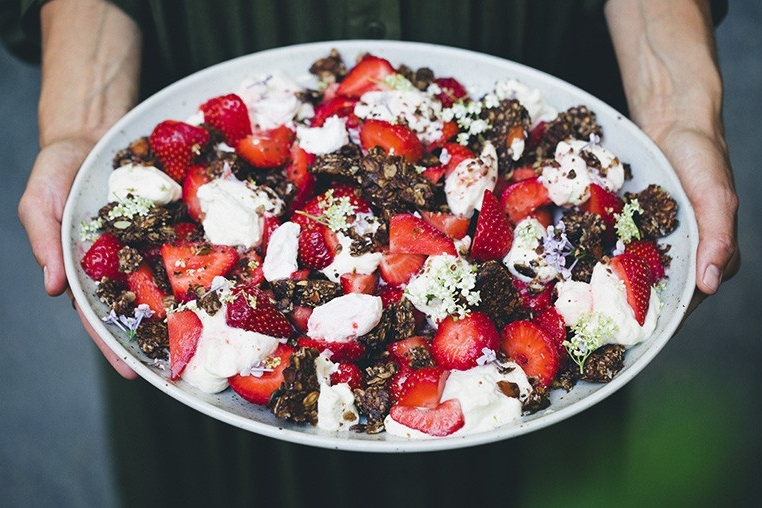
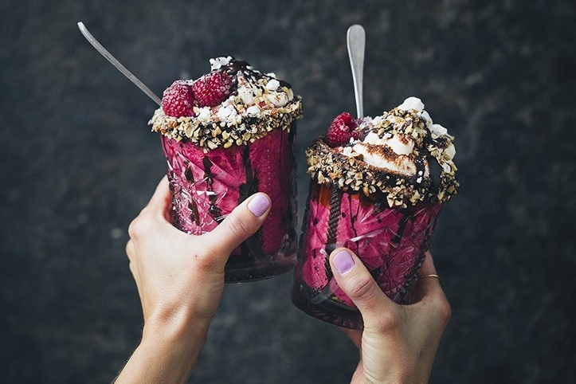

Butternut Pumpkin Bread with Matcha Cream Cheese
Bye bye Banana Bread. 2021 is the year of the Pumpkin Bread. It is lightly sweet with a soft and impossibly light crumb and hints of warm spices. Top it with cream cheese and a matcha sprinkle if you are feeling fancy.

Time: 11.5 hrs

Serves 8
Gingerbread and Lingonberry Bundt Cake
Just putting this up here before we are checking out for some Christmas celebrations with Luise’s family. This is a our gingerbread bundt cake that we have been making a couple times in December leading up to Christmas.
Time: 1 hour
Serves 6
Dark Chocolate & Sweet Tahini Cups
Tahini and chocolate are two of our favorite pantry ingredients. So we have put them together into one of the best candies we know: A tahini version of peanut butter cups. Guess what they are super easy too!
Time: 30 mins
Makes 20
Peanut Butter Filled Protein Bars
We have got two fun news to share today! 1. The most delicious protein bars/bites with peanut butter pockets. 2. Our brand new line of supplements developed for people on a plant based diet!
Time: 30 mins
Makes 16-18
Smashed Cookie Salad with Strawberries
Cookie Salad? Cookie Salad! This is not your typical salad but with the first local strawberries of the year popping up here in Scandinavia, a smashed cookie salad seemed like a proper way to celebrate.
Time: 45 mins
Serves 6
Vegan Love Shakes
Looking at these two shakes overloaded with toppings and surrounded by a million small pieces of nuts, crushed meringues and chocolate spread. As naughty as they look, these shakes are made with real ingredients.
Time: 30 mins